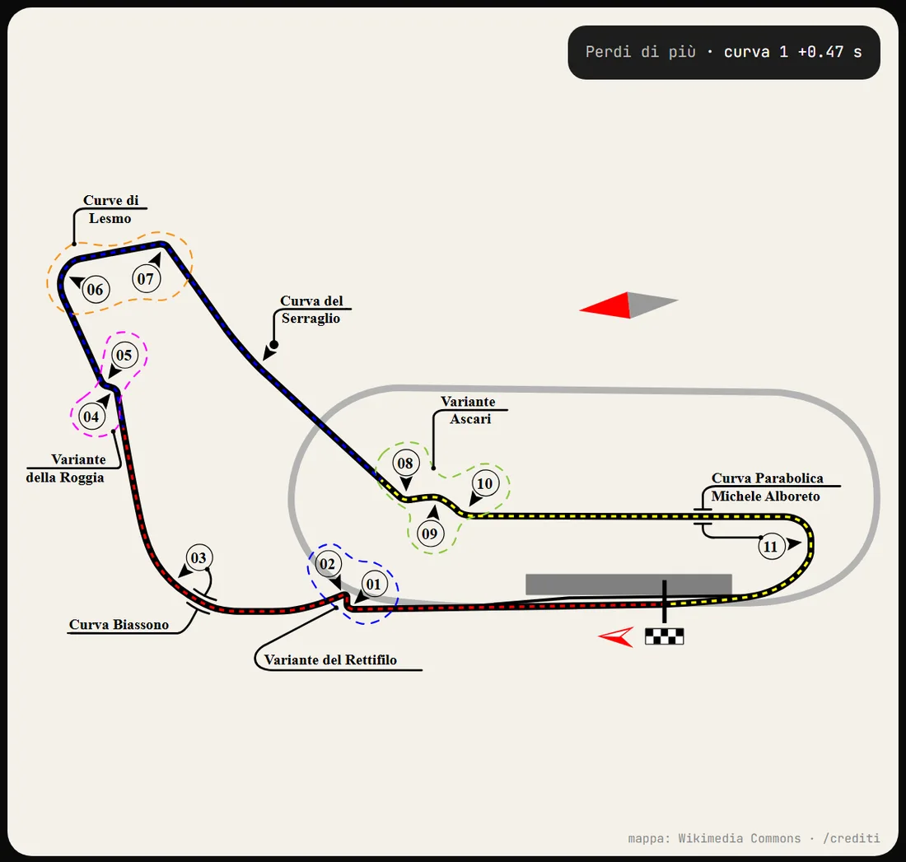
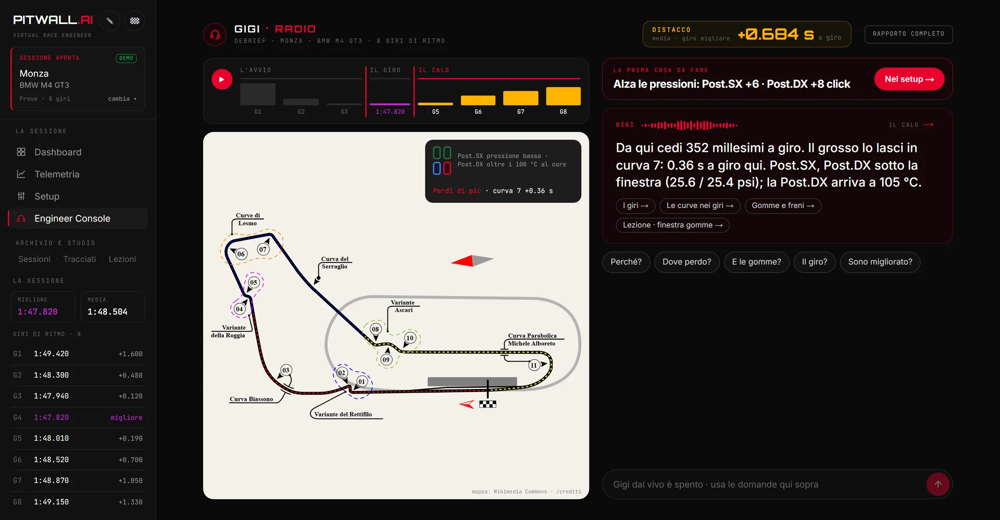
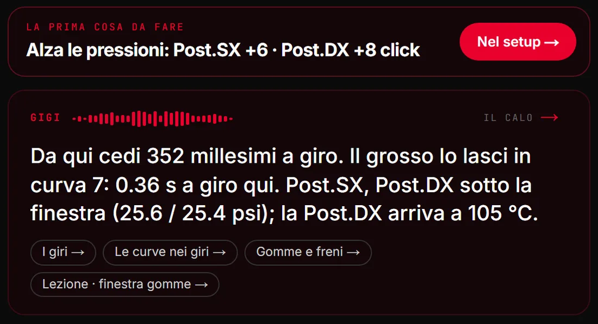
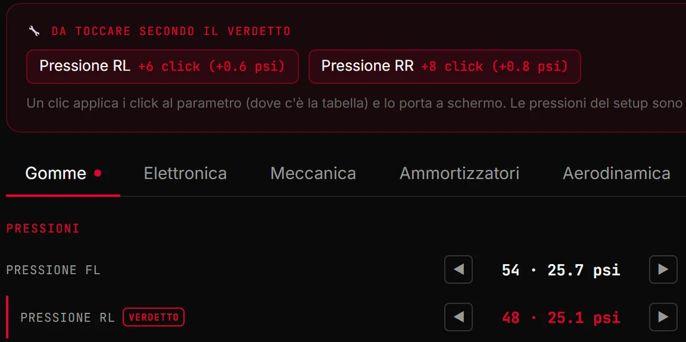
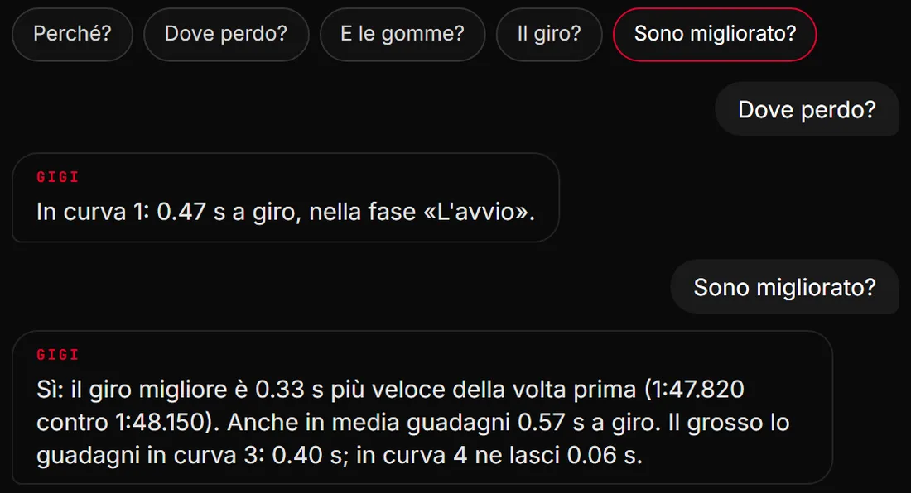

01
Dove perdi, curva per curva.
Gigi guarda i tuoi giri e ti dice in quale curva lasci i decimi, e quanti.

Un ingegnere di pista che guarda i tuoi giri di Assetto Corsa Competizione e ti dice alla radio dove perdi tempo e cosa cambiare.
Chiedi di provarloSi apre un modulo breve. Le candidature le leggo io e rispondo di persona.

Una schermata vera: la sessione demo, Monza · BMW M4 GT3.
Gigi guarda i tuoi giri e ti dice in quale curva lasci i decimi, e quanti.

Non un elenco di venti consigli: la prima cosa da cambiare, e il perché solo se lo chiedi.

«Alza le posteriori di 4 click», non «aumenta la pressione».
Oggi per BMW M4 GT3 e Ferrari 488 GT3 Evo; per le altre vetture il consiglio resta in valori.

Chiedilo a Gigi: confronta la sessione con la tua precedente sulla stessa pista e ti dice dove hai guadagnato.

È un progetto personale in prova: cerco pochi piloti che lo usino davvero e mi dicano cosa non va.
Chiedi di provarlo